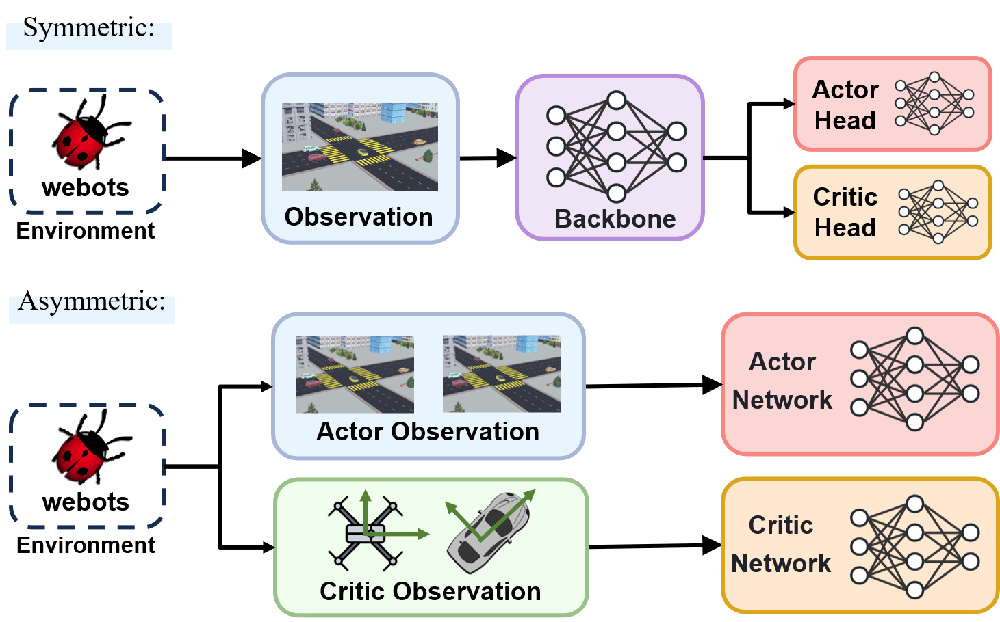

模型搭建
A3CLSTM-E2E [1] , D-VAT [2] , 以及 R-VAT(Ours)
其中，上述baseline方法中 [1] [2] 和 R-VAT 分别调用了本工程实现的3种环境( 环境封装 )，为不同需求的算法实现提供了模板。
{kind=link}
Baseline1 A3CLSTM-E2E
本工程对于 A3CLSTM-E2E 方法的复现参考了论文 AD-VAT+ [3] 基于代码仓库 rl_a3c_pytorch 的复现方式。
Alg_Base/DAT_Benchmark/models/A3CLSTM_E2E文件夹
快速运行程序
cd Alg_Base/DAT_Benchmark/
# 测试模式
# 使用 累计奖励 CR 进行测试
python ./models/A3CLSTM_E2E/main.py --Mode 0 --Scene "citystreet" --Weather "day" --delay 20 --Test_Param "CityStreet-d" --Test_Mode CR
# 使用 追踪成功比例 TSR 进行测试
python ./models/A3CLSTM_E2E/main.py --Mode 0 --Scene "citystreet" --Weather "day" --delay 20 --Test_Param "CityStreet-d" --Test_Mode TSR
# 新训练模式
python ./models/A3CLSTM_E2E/main.py --Mode 1 --workers 35 --Scene "citystreet" --Weather "day" --delay 20 --Freq 125 --New_Train
# 中断重开训练模式
python ./models/A3CLSTM_E2E/main.py --Mode 1 --workers 35 --Scene "citystreet" --Weather "day" --delay 20 --Freq 125
程序入口
main.py为整个程序的入口，主要提供两种运行模式：train和test。
其中，
train模式下同样提供了测试进程(例如程序以24进程运行，那么最后一位进程编号23对应的进程为测试进程)， 该进程主要用于训练过程的tensorboard可视化而
test模式主要利用已经完成训练的模型权重进行测试，该模式单进程运行，对单个模型权重进行测试。上述模式的配置变量为
MODE变量此外，
main.py文件还接收用户的参数配置，参数的含义与默认值如下：1. 运行参数：配置系统模式，运行频率，设备等参数
--Mode(int)=1: 配置运行模式是否为训练模式(--Mode=1是训练模式，--Mode=0是测试模式)
--workers(int)=35：并行环境数量(需要根据实际计算机的内存/显存来决定)
--gpu-ids(list)=[-1]：用于设置GPU的编号，默认为-1，即不使用GPU
--Freq(int)=125：算法端运行频率(环境端运行频率为500Hz是不可修改的)，因此默认--Freq(int)=125即环境端运行4步回传一次数据
--delay(int)=20: 等待Webots地图加载时长(只有等Webots地图加载完成之后才能够正常开始训练)
--New_Train(bool)=False: 是否开启全新的训练，默认为--New_Train=False，则会加载A3CLSTM_E2E/trained_models/Benchmark.dat预训练权重(如果存在)进行训练，并且tensorboard的曲线也会从上一次训练曲线后加载
--Port(int)=-1: 环境端与算法端通信端口，默认--Port=-1则随机利用一个当前可用的端口， 不建议手动修改
--verbose(bool)=False: 是否开启Agent动作行为与环境奖励等记录数据
--Test_Mode(str)=CR: 选择测试评估方式为 CR 或 TSR
--test_length(int)=10: 测试episode长度
--observation_buffer_length(int)=3: 观测状态使用的帧数量2. 环境参数：配置选择的环境
--map(str)="citystreet-day.wbt": 配置训练/测试环境场景种类，从[citystreet-day.wbt,downtown-day.wbt,lake-day.wbt,village-day.wbt,desert-day.wbt,farmland-day.wbt,citystreet-night.wbt,downtown-night.wbt,lake-night.wbt,village-night.wbt,desert-night.wbt,farmland-night.wbt,citystreet-foggy.wbt,downtown-foggy.wbt,lake-foggy.wbt,village-foggy.wbt,desert-foggy.wbt,farmland-foggy.wbt,citystreet-snow.wbt,downtown-snow.wbt,lake-snow.wbt,village-snow.wbt,desert-snow.wbt,farmland-snow.wbt]中选择3. 模型参数：配置模型权重导入和保存相关参数
--load(bool)=True：是否导入现有模型进行进一步的训练(只有当--load=True以及而且模型权重A3CLSTM_E2E/trained_models/Benchmark.dat存在的时候才会导入)
--save-max(bool)=False： 是否保存测试进程reward最大时刻的模型权重，默认为False即仅保存最后一个时刻的模型权重
--model_type(str)="E2E"： 指定当前使用的模型种类，如果用户自主实现了模型可以在此处增加配置。
--save-model-dir(str)="./models/A3CLSTM_E2E/trained_models/"：模型保存的路径
--Test_Param(str)="Benchmark": 导入什么权重进行测试(须--Mode(int)=0)。默认为--Test_Param="Benchmark"，会导入权重A3CLSTM_E2E/trained_models/Benchmark.dat进行测试4. 可视化参数：配置可视化文件相关参数
--tensorboard-logger(bool)=True：是否使能tensorboard进行模型的可视化
--log-dir(str)="./models/A3CLSTM_E2E/logs/"：如果开启了tensorboard，log文件存储的位置
log文件
本工程提供了两种log记录方式，第一种是直接输出log文件(通过
config.json中的["Benchmark"]["verbose"]进行配置)，另外一种是利用tensorboard记录训练过程的性能变化。模式1：直接输出log文件
log文件见文件夹Alg_Base/DAT_Benchmark/logs
仅当
verbose开启是，方才输出log文件本模式主要用于程序的调试和数据传输验证，相当于是终端
Agent${n}.log主要用于保存环境端传输的数据，例如希望观测环境端获取的自定义奖励参数RewardParams，则可以在该文件观测模式2：直接输出tensorboard-logger文件
tensorboard-logger文件见文件夹Alg_Base/DAT_Benchmark/models/A3CLSTM_E2E/runs/Benchmark_training
tensorboard是神经网络训练过程中的常用可视化平台，因此，本工程也提供了相应的支持本工程在进行多进程训练的时候会预留一个进程进行测试，例如：用户选择并行智能体数量为35,则实际训练的过程中会有23个训练进程以及1个测试进程，测试进程在每条Episode开始的时候同步shared_model的权值，并进行测试。
而
tensorboard-logger文件中记录的就是测试进程的数据，主要是训练过程中的value，用于评估智能体训练的情况此外，如果程序因为外部原因中断，本工程提供了
tensorboard-logger不中断功能，利用num_test.txt存储当前数据条目数，并在新训练开始时继续进行记录。注意： 如果用户希望重新记录训练曲线，则需要在启动训练的命令中添加
--New_Train。完成所有配置之后，直接运行如下代码，即可在
localhost:xxxx查看tensorboard可视化记录cd Alg_Base/DAT_Benchmark/models/A3CLSTM_E2E/runs tensorboard --logdir Benchmark_training
Baseline2 D-VAT
Alg_Base/DAT_Benchmark/models/D_VAT文件夹
快速运行程序
cd Alg_Base/DAT_Benchmark/
# 测试模式
# 使用 累计奖励 CR 进行测试
python ./models/D_VAT/DVAT_main.py -w 1 -m citystreet-day.wbt --train_mode 0 --Test_Mode CR
# 使用 追踪成功比例 TSR 进行测试
python ./models/D_VAT/DVAT_main.py -w 1 -m citystreet-day.wbt --train_mode 0 --Test_Mode TSR
# 新训练模式
python ./models/D_VAT/DVAT_main.py -w 35 -m citystreet-day.wbt --train_mode 1 --New_Train
# 中断重开训练模式
python ./models/D_VAT/DVAT_main.py -w 35 -m citystreet-day.wbt --train_mode 1
程序入口
DVAT_main.py为整个程序的入口,同样提供训练和测试模式(具体配置见下方参数配置即可)1. 运行参数：配置系统模式，运行频率，设备等参数
--workers(int)=35: 环境并行训练的数量数(需要根据实际计算机的内存/显存来决定)
--train_mode(int)=1: 配置运行模式是否为训练模式(--train_mode=1是训练模式，--train_mode=0是测试模式)
--port(int)=-1: 环境端与算法端通信端口，默认--port=-1则随机利用一个当前可用的端口，不建议手动修改
--New_Train(bool)=False: 是否开启全新的训练，默认为--New_Train=False，则会加载params.pth预训练权重(如果存在)进行训练，并且tensorboard的曲线也会从上一次训练曲线后加载2. 环境参数：配置选择的环境
--map(str)="citystreet-day.wbt": 配置训练/测试环境场景种类，从./Webots_Simulation/traffic_project/worlds/*.wbt中选择3. 模型参数：配置模型权重导入和保存相关参数
--savepath(str)="params.pth": 模型保存的路径4. 可视化参数：配置可视化文件相关参数
--tensorboard_port(int)=1: 是否使用tensorboard-logger,--tensorboard_port(int)!=-1则随机分配可用端口，否则不启用(测试状态不启用)
代码封装与改动细节
D-VAT采用Actor-Critic非对称框架，Actor-Critic对称架构和非对称架构的示意图如下：
 Actor-Critic对称架构和非对称架构的示意图
D-VAT代码主要有下述实现：
自主实现环境类
环境类仿照Gym环境类自主实现DVAT_ENV环境类，具体代码见Alg_Base/DAT_Benchmark/models/D_VAT/DVAT_envs.py
为支持Actor-Critic非对称架构，DVAT_ENV环境类状态空间包括actor_obs和critic_obs两部分：self.observation_space = gymnasium.spaces.Dict({ "actor_obs": gymnasium.spaces.Box(low=0, high=1.0, shape=(obs_buffer_len,)+image_shape, dtype=np.float32), "critic_obs": gymnasium.spaces.Box(low=-np.inf, high=np.inf, shape=(9,), dtype=np.float32), })
自主实现的Policy
为支持Actor-Critic非对称架构，继承 Tianshou 中
DiscreteSACPolicy实现了DVAT_SACDPolicy。
自主实现并行类与Collector
参考 Async_SubprocVecEnv & SubprocVecEnv_TS 实现了自定义的并行环境类和collector。
{kind=link}
log文件
tensorboard-logger文件见文件夹Alg_Base/DAT_Benchmark/models/D_VAT/DVAT_logs
在模型训练的过程中，只要参数
--tensorboard_port(int)!=-1，那么启动程序时会自动启动tensorboard-logger但如果希望手动启动tensorboard，也可以使用以下的命令：
cd Alg_Base/DAT_Benchmark/models/D_VAT/ tensorboard --logdir DVAT_logs
Baseline3 R-VAT
Alg_Base/DAT_Benchmark/models/R_VAT文件夹
快速运行程序
cd Alg_Base/DAT_Benchmark/
# 测试模式
# 使用 累计奖励 CR 进行测试
python ./models/R_VAT/RPPO.py -w 1 -m citystreet-day.wbt --train_mode 0 --Test_Mode CR
# 使用 追踪成功比例 TSR 进行测试
python ./models/R_VAT/RPPO.py -w 1 -m citystreet-day.wbt --train_mode 0 --Test_Mode TSR
# 新训练模式
python ./models/R_VAT/RPPO.py -w 35 -m citystreet-day.wbt --train_mode 1 --New_Train
# 中断重开训练模式
python ./models/R_VAT/RPPO.py -w 35 -m citystreet-day.wbt --train_mode 1
程序入口
RVAT.py为整个程序的入口,同样提供训练和测试模式(具体配置见下方参数配置即可)1. 运行参数：配置系统模式，运行频率，设备等参数
--workers(int)=35: 环境并行训练的数量数(需要根据实际计算机的内存/显存来决定)
--train_mode(int)=1: 配置运行模式是否为训练模式(--train_mode=1是训练模式，--train_mode=0是测试模式)
--port(int)=-1: 环境端与算法端通信端口，默认--port=-1则随机利用一个当前可用的端口，不建议手动修改
--New_Train(bool)=False: 是否开启全新的训练，默认为--New_Train=False，则会加载params.pth预训练权重(如果存在)进行训练，并且tensorboard的曲线也会从上一次训练曲线后加载2. 环境参数：配置选择的环境
--map(str)="citystreet-day.wbt": 配置训练/测试环境场景种类，从./Webots_Simulation/traffic_project/worlds/*.wbt中选择3. 模型参数：配置模型权重导入和保存相关参数
--savepath(str)="./models/R_VAT/params.pth": 模型保存的路径4. 可视化参数：配置可视化文件相关参数
--tensorboard_port(int)=1: 是否使用tensorboard-logger,--tensorboard_port(int)!=-1则随机分配可用端口，否则不启用(测试状态不启用)
课程学习
我们的方法在RPPO的基础上增加了课程学习方法，课程学习的第一阶段，智能体会在简单的设定下（无遮挡情况，车仅直行）对颜色随机的车进行跟踪
为了便于操作，我们将简单的设定抽离成地图，即
./Webots_Simulation/traffic_project/worlds/simpleway-*.wbt地图因此，第一阶段就在对应的
simpleway-*.wbt上进行训练即可完成任务理解之后，即可在视觉困难的地图上进行第三阶段训练，学习复杂视觉的特征
例如，对于地图
citystreet-day.wbt我们三阶段的运行命令如下：cd Alg_Base/DAT_Benchmark/ # Stage1:任务理解 python ./models/R_VAT/RPPO.py -w 35 -m simpleway-grass.wbt --train_mode 1 --New_Train # Stage2:视觉泛化 python ./models/R_VAT/RPPO.py -w 35 -m citystreet-day.wbt --train_mode 1 # 测试模式 # 使用 累计奖励 CR 进行测试 python ./models/R_VAT/RPPO.py -w 1 -m citystreet-night.wbt --train_mode 0 --Test_Mode CR # 使用 追踪成功比例 TSR 进行测试 python ./models/R_VAT/RPPO.py -w 1 -m citystreet-night.wbt --train_mode 0 --Test_Mode TSR
两阶段地图对照表如下：
Origin Map
Simple Map
citystreet-day
simpleway-grass_day
citystreet-night
simpleway-grass_night
citystreet-foggy
simpleway-grass_foggy
citystreet-snow
simpleway-city_snow
desert-day
simpleway-desert_day
desert-night
simpleway-desert_night
desert-foggy
simpleway-desert_foggy
desert-snow
simpleway-desert_snow
downtown-day
simpleway-clinker_day
downtown-night
simpleway-clinker_night
downtown-foggy
simpleway-clinker_foggy
downtown-snow
simpleway-city_snow
farmland-day
simpleway-farm_day
farmland-night
simpleway-farm_night
farmland-foggy
simpleway-farm_foggy
farmland-snow
simpleway-farm_snow
lake-day
simpleway-lake_day
lake-night
simpleway-lake_night
lake-foggy
simpleway-lake_foggy
lake-snow
simpleway-lake_snow
village-day
simpleway-village_day
village-night
simpleway-village_night
village-foggy
simpleway-village_foggy
village-snow
simpleway-village_snow
log文件
tensorboard-logger文件见文件夹Alg_Base/DAT_Benchmark/models/${model_name}_logs
在模型训练的过程中，只要参数
--tensorboard_port(int)!=-1，那么启动程序时会自动启动tensorboard-logger但如果希望手动启动tensorboard，也可以使用以下的命令：
cd Alg_Base/DAT_Benchmark/ tensorboard --logdir models/${model_name}_logs
引用：